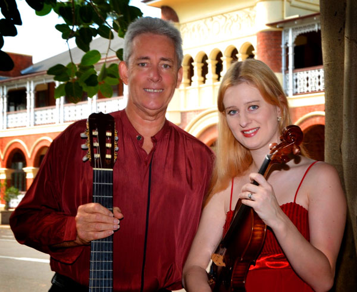

Townsville Music Centre
Musicians
Townsville Concert Band

The Townsville Concert Band are currently looking for musician members.
This is a local community band who meet once a week for rehearsals, and who play gigs around town throughout the year. The band plays a range of different styles of concert band music, ranging from classical to musical theatre and modern.
All levels and ages are welcome.
For more information or bookings: | |
| Email: | hollie.clark1@jcu.edu.au |
| Phone Hollie: | 04019 151 185 |
| Phone Mark: | 0408 088 675 |
Poms from Oz

Poms from Oz are Judy, Kathleen and Alan Pomeroy, a family of solo vocalists from North Queensland, Australia. All are dinky di Oz with Judy and Kathy being descendents of First Fleeters.
Their tight harmony and vocal strength bring a fresh feel to original, contemporary and traditional works, uncovering a rich tapestry of songs gathered in their travels from around the world. Most songs are a cappella but sometimes accompanied by guitar and/or harmonica. Moods in their songs range from downright to real tear jerkers and audience participation is encouraged. Their sound is distinctive, as Judy arranges all the songs specifically for their voices.
A tast brew of Oz songs and Oz voices, with a dash of guitar and harmonica. Open a nice bottle of red , sit back and enjoy.
For more information or bookings: | |
| Email: | admin@townsvillemusic.org.au |
| Phone the Music Centre: | 07 4724 2086 |
Wassa

Wassa is a six-piece percussion group performing traditional rhythms from West Africa on traditional instruments. The Townsville based group has been performing throughout North Queensland and as far as Papua New Guinea since 2001.
Visit our website.Stokes-Nicholson Big Band

The Stokes-Nicholson Big Band is a not for profit community 22 piece Big Band playing Jazz and Big Band music.
For more information or bookings: | |
| Email: | mlg7@optusnet.com.au |
| Phone Les: | 0417 637 893 |
The Camerata Singers

The concept of the Camerata Singers originated in the 1980s when Susan Grinsell, who was teaching voice at James Cook University realised that ensemble singing was sadly lacking for tertiary music students. Since then, Susan, along with repetiteur Carol Dall'Osto, has strived to bring quality ensemble singing to the wider community by performing at events from the Ingham Italian Festival through to Cotter's Markets in the mall.
The Camerata Singers comprises a group of trained singers, both male and female, from age 18 and over who strive to provide quality performances in a range of styles from classical through to A cappella and contemporary. A number of members also regularly participate in local music theatre and theatre productions.
For more information or bookings: | |
| Email: | admin@townsvillemusic.org.au |
| Phone the Music Centre: | 07 4724 2086 |
Aviva Quartet

Four talented musicians combine their skills in a variety of musical styles including fiery Rhumbas, Tangos, Serenades - a mixture of the most devine and swoon-worthy pieces, guaranteed to delight the senses.
The group features Caroline Lloyd-Doolan and Susan Fraser on Violin, Ivy Wu on Cello and Jessica Winton on viola.
Caroline is a well known performer both locally and regionally and Susan is also well known on the local music scene.
Ivy hails from Brisbane having completed her studies in France.
Jessica has come back to Townsville after completing her degree in Tasmania.
The girls all have a passion for chamber music and are very excited to be able to form up a group that will be able to perform regularly both locally and in the surrounding regions. Their concert will take listeners through a wonderful journey of beautiful melodies and the most romantic music that is guaranteed to leave the senses fulfilled and wanting more.
For more information or bookings: | |
| Email: | admin@townsvillemusic.org.au |
| Phone: | 07 4724 2086 |
| Mobile: | 0402 255 182 |
Harbourside Duo
Harbourside Duo is a new ensemble performing in Townsville and North Queensland featuring Monica Martin on Violin and David Roberts on Classical Guitar. We perform a fine selection of music from Latin, Jazz, Celtic, Classical and popular styles.
Harbourside Duo is available for Corporate Functions, Weddings and private gatherings.
For more information or bookings: | |
| Phone David: | 0459 239 290 |
| Visit our website | |
Townsville's dynamic 12-piece Stage Band

Jazz, rock, blues and modern top-40 songs featuring vocalists, trumpets, saxophones, trombone, drums, piano/keyboard and guitars.
Some titles from the repertoire - It Don't Mean a Thing - Mustang Sally - Spinning Wheel - Moondance - In the Midnight Hour - Le Belleclaire Blues - Lady Madonna - Skyfall - Shake a Tail Feather - Soul Man - Peter Gunn - Minnie the Moocha - Sweet Home Chicago - R.E.S.P.E.C.T. - Everybody - Leave Your Hat On - Superstition - The Letter - Proud Mary - Knock on Wood - I Got You - ROCK in the USA - December 1963 (Oh What a Night!) - Don't Know Why - Walkin' on Sunshine
For more information or bookings: | |
| Phone Andi: | 0421 072 625 |
Rosewood Guitar Quartet

Add some elegance to your next social event! Have the Rosewood Guitar Quartet provide that special atmosphere by playing for your guests
Sample CD available on request
For more information or bookings: | |
| Email: | joannemmccluskey@gmail.com |
| Phone: | 0459 239 290 |
Aquapella

Aquapella are 50 singers from the Townsville area bringing you a cappella world music at its very best: inspiring and uplifting harmonies from around the globe. A South African party song, a Hungarian love triangle, "The Lion Sleeps Tonight" in French - a sumptuous variety of different languages, stories, rhythms and moods to entertain and move you in the wonderful common language of music. Come along and travel the world by song!
Choir director Beat Lehmann was born in Switzerland where he first became involved in choir music by participating in classical productions like Handel's Messiah, Mozart's Mass in C minor etc. A study year abroad gave him the opportunity to sing with the Pontardullais Welsh Male Choir. After completing an M.A. in Social Anthropology he concentrated on his other passion, dance, directing a Modern Dance Company for several years. In 1986, Beat migrated to Australia where he completed a Ph.D. in Linguistics and involved himself in choir music again. For 12 years he conducted AkaBella, a well-known world music choir from Bellingen, NSW. AkaBella participated in major festivals like the National Folk Festival in Canberra, the Bellingen Global Carnival and theWoodford Folk Festival where they featured in the ABC documentary ìFestival on Fire and launched their first CD 'Mosaic'. Beat moved to Magnetic Island in 2003 and has established a similarly successful world music choir for the Townsville area. Beat's choirs focus on the rich musical heritage of cultures around the globe. A South African party song, a Hungarian love triangle, a Mexican lullaby, a French version of 'The Lion Sleeps Tonight' to delve into the incredible variety and depth of a cappella world music and the cultures it represents, is not only fun, but a very enriching and uplifting experience.
Aquapella won the ABC Choir of the Year competition for Queensland in 2006.
For more information or bookings: | |
| Email: | beatlehmann@iprimus.com.au |
Celtic Fyre

Typical audience response: - "WOW - I wasn't prepared for that! Racing around the stage in kilts, blowing bagpipes, jumping from one instrument to the next, these guys know how to entertain!"
They will break your heart with the mournful and eerie sounds of the Great Highland Bagpipe and then crank it up real hard and rock you 'til you drop.
This 11 piece band is a fun-loving kick-em-in-the-pants band that just wants to rock - celtic style!
For more information or bookings: | |
| Visit their website | |